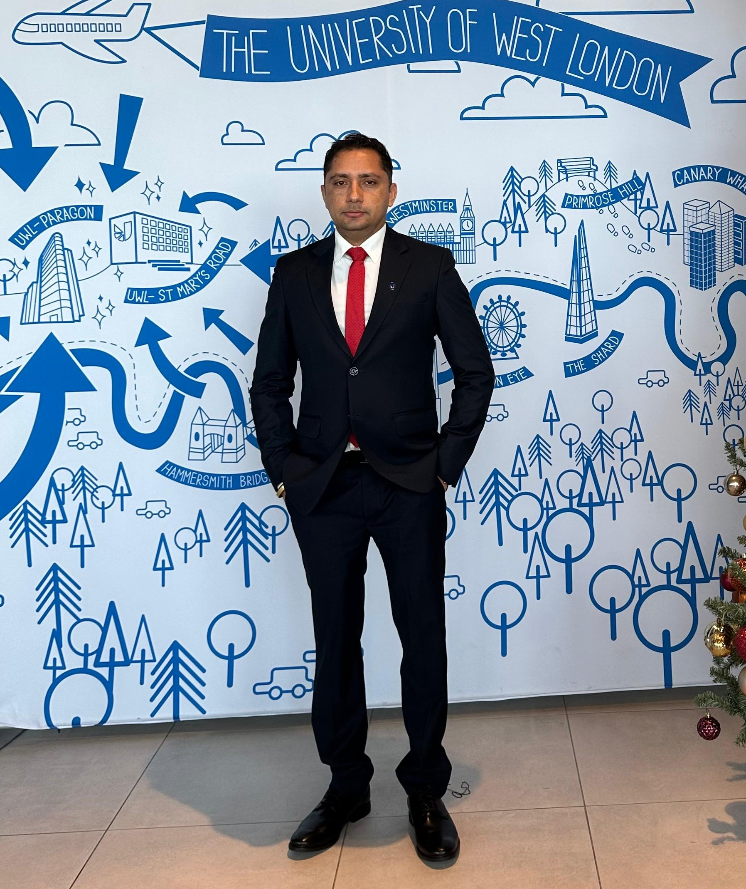

About Me
Pramod Timalsina —Data Analyst with an MSc in Business Analytics from the University of West London. I have over nine years of experience in administration and public service, combining strong analytical skills with a deep understanding of organizational processes. I am passionate about leveraging data to drive informed decision-making, improve efficiency, and deliver actionable business insights.
Education
- MSc Business Analytics — University of West London (Sep 2024 – Sep 2025)
- Master's in Economics — Tribhuvan University (2011–2013)
- BSc Physics & Mathematics — Tribhuvan University (2007–2010)
Interests
Data storytelling, business insight generation, exploring analytical tools, travelling, and cultural learning.